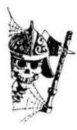

1.
Mikor magadhoz térsz, körülnézel: hatalmas
bolthajtásos csarnokban állsz, mélyen a föld alatt.
A levegő hűvös, és azon töprengsz, vajon milyen
borzalmas vég vár rád. Teljesen egyedül vagy
ezen a világon, egyetlen barát nélkül, és fogalmad
sincs, milyen ördögi veszélyek leselkedhetnek rád
itt, oly távol az otthonodtól. Ablakot nem látsz
sehol a teremben, sem természetes fényt, csak a
távolban vörösen lángoló, falra erősített fáklyák
adnak némi világosságot. A falak nyirkosak a
levegő dohos. A csarnok végében két boltíves
kijáratot látsz. Mielőtt közelebbről
megvizsgálhatnád őket, a fáklyák fénye megremeg
és csontig hatoló, dermesztően hideg fuvallat csap
meg. A barlang beláthatatlan mélyében valamitől
megmozdult a levegő. Fény villan a távolban, és a
csarnokon pokoli üvöltés visszhangzik végig. Nincs
az az élőlény, amely ilyen rémisztő hangot adna,
gondolod, aztán eszedbe jut, hogy még semmit
sem tudsz Orb félelmetes lakóiról. Sebesen
közeledő lépéseket hallasz, búr még nem látod, ki
vagy mi közeleg. Ha kirohansz a hozzád közelebb
lévő folyosón - lapozz a 17-re. Ha ott maradsz és
kardot rántasz - lapozz a 30-ra.
